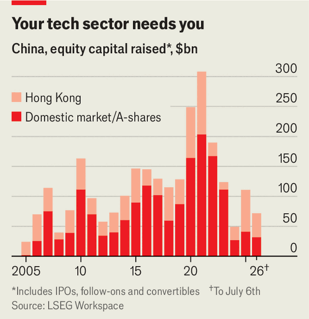

China may struggle to fund Xi Jinping’s tech dreams
Even though capital markets are staging a comeback
July 9th 2026

CHINA’S LEADERS rarely namecheck individual companies. It is rarer still for them to talk up a group’s valuation while it prepares a highly anticipated initial public offering (IPO). That did not stop Li Qiang, the country’s premier, from recently mentioning Unitree, a robotics firm, and the explosion in its valuation from 10m yuan to 42bn yuan ($6bn) in a decade.
Unitree, which on July 2nd received approval to list, is just one of thousands of companies behind the Communist Party’s plan to take the lead in a long list of frontier technologies over the next decade, from artificial intelligence and humanoid robots to fusion power and digital brain implants. The businesses behind these technologies now need copious amounts of capital to make them work at scale. China’s AI data centres alone will cost 2trn yuan over the next five years. Robotics and high-end manufacturing could require a similar amount over the next ten. As America’s stock market welcomes one mega-IPO after another and its bond market catches AI fever, can China’s punier capital markets keep pace—and live up to the party’s ambitions?
Part of China’s technology bill will be footed by established companies’ reinvested profits and by China’s state-directed banking system. But public and private equity investors will need to pick up a chunk of the tab. To nudge them along, in the past two years Xi Jinping, Mr Li’s paramount boss, has eased an earlier crackdown on tech and “disorderly” investing. He has also made it clearer where he wants capital to flow.
As a result, the first five months of 2026 saw the launch of over 9,500 new equity funds, half as many again as in the same period last year. Much of this activity has been driven by venture-capital funds set up by large corporations, both private and state-owned. At the end of 2025 state-directed funds raised 230bn yuan in new capital to invest in tech, up from 11bn yuan a year earlier. Slow credit growth in a slowing economy has freed up banks to lend more to private investors.
DeepSeek, China’s hottest AI startup, is said to be raising capital at a valuation of nearly $60bn from Tencent, a digital titan, and CATL, the world’s largest battery-maker. Unitree owes its soaring valuation to similar investments. Hurun, a consultancy, counted at least 80 startups surpassing $1bn in value in the first half of the year, up from 22 in the whole of 2025.

Public markets are astir, too, after a period when officials hit the brakes, fearful that IPOs sucked capital away from other stocks in a sagging market. Chinese firms have raised around $32bn this year, double the comparable figure for 2025 and triple that for 2024 (see chart). Big deals are back. CXMT, a maker of memory chips, is eyeing a $4.3bn listing, one of the biggest in recent years. Another ten tech firms are planning multibillion-yuan flotations. Shanghai’s tech-heavy STAR market, which had barred profitless startups from listing in 2024 and 2025, has let them back in. Unitree got its IPO approved in 100 days, not the year or more it used to take.
Insiders welcome the revival of Chinese capital markets. But some also remember the early days of Chinese capitalism in the 1990s, when these served chiefly to funnel money to state firms rather than seek rich returns. Now it is often state firms funnelling capital to startups. SMIC, a state-owned chipmaker, has launched a fund that now owns stakes in more than 400 semiconductor firms. When private companies get involved, they often team up with the state. Xiaomi, which now makes electric cars as well as smartphones, has created a fund with the local government of Hubei province that has made more than 100 investments.
For the asset managers who receive the state’s capital, and its private co-investors, government involvement comes with strings. The money must go to companies that fit in with the party’s tech plans. Many are not particularly innovative; some may be working on problems solved years ago in other countries. Bank-backed investment firms, for example, rarely invest in startups younger than five years, preferring companies that had already received some sort of government recognition, according to a review of such deals by Gavekal, a consultancy. That could mean limited upside.
At the same time, straying from favoured sectors has big downsides. Less state capital dampens valuations. A lack of state backers may also make it harder to get IPOs approved, even as SMIC’s fund, for example, has listed at least 48 portfolio companies and is preparing to float another 50. Regulators are reserving listing privileges almost exclusively for top hardware makers, such as Unitree, and for those that, like CXMT, are helping the country break away from reliance on foreign tech.
The job of the China Securities Regulatory Commission (CSRC), the main markets watchdog, is now not just to vet companies, prevent bubbles and manage liquidity, but also to ensure that capital flows towards Mr Xi’s policy goals. However, striking a balance between industrial policy and market stability is tough. The CSRC’s aim of maintaining a “slow bull” market that rises gradually rather than a Pamplona-like run is hard to accomplish when top leaders talk up individual tech firms. Listening to such pronouncements, hundreds of millions of Chinese retail investors are pulling money out of boring but important industries like consumer staples (down by 15% this year) and into tech (up by 20% going by Shenzhen’s technology-heavy ChiNex index).
Such considerations make professional investors with the real money more nervous than they might be in a freer market. That in turn makes them stingier with capital. Instead, state banks with a record for inefficient capital allocation will end up investing more than they should. This is what happens when the central government’s policy goals come first and greed is secondary, observes one veteran of the Chinese market. Far from helping China fulfil its techno-designs, a hands-on state may make them harder to attain.■
For more expert analysis of the biggest stories in economics, finance and markets, sign up to Money Talks, our weekly subscriber-only newsletter.